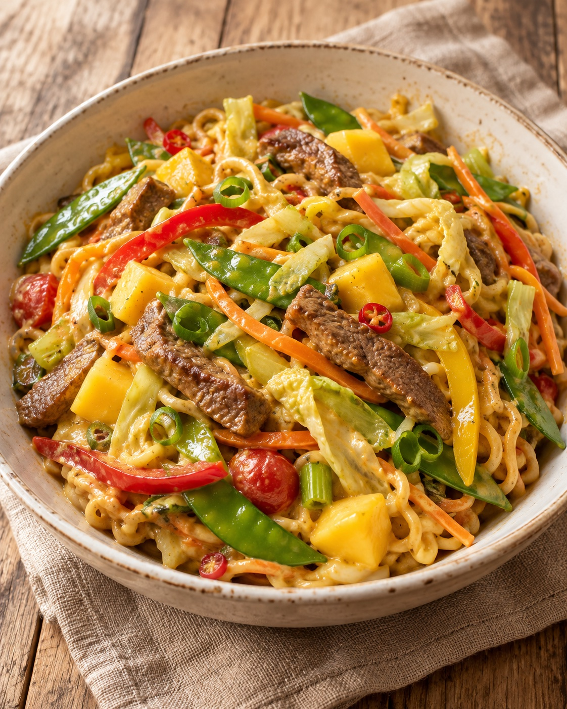

Unsere Klassiker · Pfannen- & Hackgerichte
Asia Wok Mix

Gebratene Mie-Nudeln mit Fleisch, buntem Gemüse und fruchtiger Mango.
Zutaten
1 kgFleisch zum Kurzbraten, z. B. Rind, Schwein oder Geflügel
600 gMie-Eiernudeln
1 Stk.Spitzkohl
1 StaudeStaudensellerie
500 gMöhren
2–3 Stk.Paprikaschoten
500 gZuckererbsenschoten
1 BundLauchzwiebeln
2 Stk.Tomaten
1–2 Stk.Chilischoten
1 Stk.Mango
EtwasSahne, nach Belieben
Nach GeschmackSalz und Pfeffer
Nach GeschmackCurrypulver
EtwasÖl zum Braten
Zubereitung
- Fleisch in grobe Streifen schneiden. Spitzkohl, Staudensellerie, Möhren, Paprika und Chili in feine Streifen schneiden. Zuckererbsenschoten putzen, Tomaten würfeln und Lauchzwiebeln in Ringe schneiden. Mango schälen und würfeln.
- Öl im Wok oder in einer großen Pfanne erhitzen. Fleisch portionsweise scharf anbraten, mit Salz, Pfeffer und Curry würzen und herausnehmen. Rindfleisch kann zunächst innen rosa bleiben; Geflügel und Schweinefleisch vollständig durchgaren.
- Paprika, Möhren, Staudensellerie, Spitzkohl und Chili portionsweise in etwas Öl kräftig anbraten. Tomaten dazugeben und kurz weiterschmoren. Zuckererbsenschoten gegen Ende hinzufügen, damit sie bissfest bleiben.
- Mie-Eiernudeln nach Packungsangabe, höchstens etwa 4–5 Minuten, bissfest kochen und abgießen.
- Fleisch, Nudeln, Gemüse, Lauchzwiebeln und Mango in einem großen Wok, einer Pfanne oder einem Kazan mischen und nochmals kurz durchbraten. Bei Bedarf in mehreren Portionen arbeiten. Nach Belieben mit etwas Sahne ablöschen und abschmecken.
Tipp
Die Menge ergibt vier sehr großzügige Portionen. Fleisch und Gemüse in kleinen Portionen braten, damit alles schön anröstet.